A la découverte du HTML
Le contenu d'une page web est intégré dans un fichier d'extention .html, ce type de fichier est écrit par un webmaster ou généré par un serveur (dans le cadre du web dynamique) qui le renvoie au client. Le navigateur web lit ce fichier, cette exécution permet au client de voir apparaître le contenu d'une page web sur son navigateur.
Voici à quoi ressemble le squelette "très simplifié" d'un script en HTML :
 Pour construire une page web en HTML, il suffit d'ouvrir un éditeur de texte et d'y écrire le code sous la forme d'un fichier ayant comme extention .html.
Le HTML est langage dit balisé. Pour écrire du contenu, il faut l'écrire entre balises. Chaque balise opère une fonction sur le contenu.
Un exemple de balise est la balise <h1> </h1> permettra de mettre en grand le texte.
<b> </b> en gras.
Exemple :
Pour construire une page web en HTML, il suffit d'ouvrir un éditeur de texte et d'y écrire le code sous la forme d'un fichier ayant comme extention .html.
Le HTML est langage dit balisé. Pour écrire du contenu, il faut l'écrire entre balises. Chaque balise opère une fonction sur le contenu.
Un exemple de balise est la balise <h1> </h1> permettra de mettre en grand le texte.
<b> </b> en gras.
Exemple :
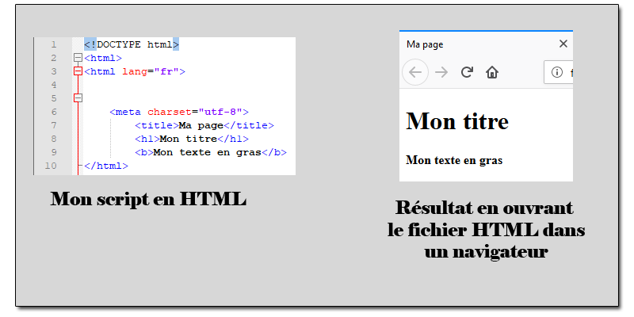
On observe une "correspondance" entre les balises et ce qui est affiché. Pour mieux l'observer, l'image ci-dessous met en couleur la balise en lien avec ce qu'elle affiche.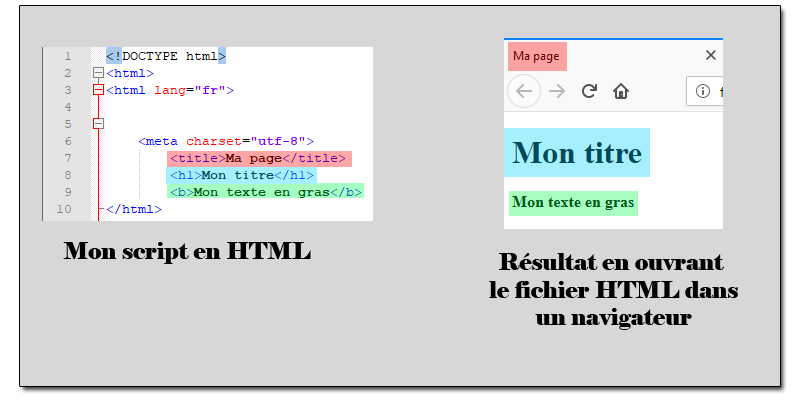
1. Aller dans le dossier "Mon super site" que vous avez copier-coller dans votre dossier personnel. Faîte clique-droit sur le fichier mapage et cliquer sur Edit with notepad++.
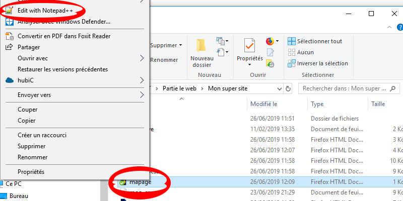
Notepad ++ est un éditeur de texte qui colorie les balises automatiquement. Il s'adapte aussi à plusieurs langages de programmation.Vous devriez voir la fenêtre apparaître identique à l'image ci-dessous :
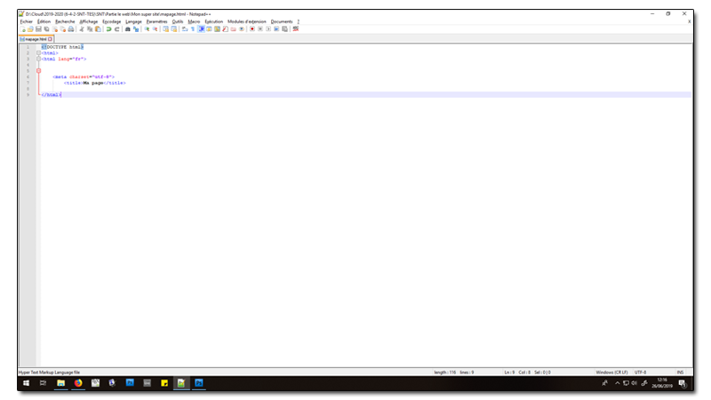
2. A la ligne 8 du fichier.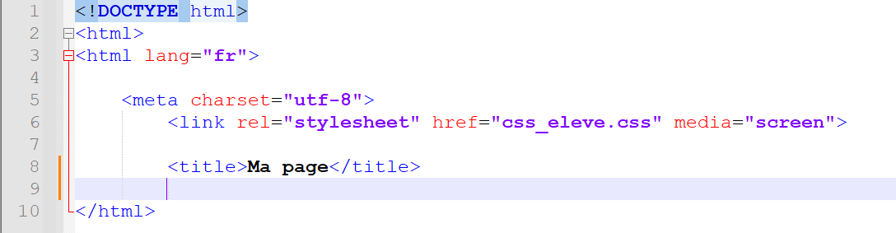
Modifier la ligne en indiquant votre nom et votre prénom. Sauvegarder le fichier en cliquant sur la disquette bleu en haut à gauche ( ).
3. Retourner dans le répertoire "Mon super site" et ouvrir le fichier "mapage" avec un navigateur web.
).
3. Retourner dans le répertoire "Mon super site" et ouvrir le fichier "mapage" avec un navigateur web.
Retourner sur notepad++ afin de continuer à éditer le fichier mapage.html. Nous allons insérer la suite du code en faisant un saut de ligne pour chaque nouveauté :
1. Utiliser les balises : <h1> </h1> pour écrire en titre : Ma page web en SNT. (en ligne 9)
2. Utiliser les balises : <p> </p> pour un texte personalisé. (en ligne 10)
3. Sauvegarder le fichier, retourner sur votre navigateur avec le fichier mapage chargé. Pour rafraichir votre page, appuyer sur F5.
Chaque page du site se situe dans le répertoire "Mon super site" :
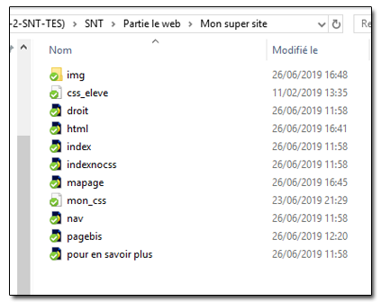
Le lien hypertexte a pour but de nous rediriger vers l'une des pages. Pour créer un lien hypertexte, nous aurons besoin de la balise suivante : <a href="chemin du fichier HTML">Texte apparant sur le site et cliquable</a> . Le chemin relatif pour aller à la page acceuil est index.html, car le fichier mapage.html et index.html se situe dans le même répertoire. Retourner sur notepad++ afin de continuer à éditer le fichier mapage.html et à la suite : 1. Créer un lien hypertexte permettant de se rediriger vers la page acceuil. Grâce à la ligne de code : <a href="index.html">Acceuil</a> 2. Créer un lien hypertexte permettant de se rediriger vers la page naviguer sur le web. Le chemin relatif du fichier est : nav.html 3. Sauvegarder le fichier, retourner sur votre navigateur avec le fichier mapage chargé. Pour rafraichir votre page, appuyer sur F5.Pour créer un lien hypertexte vers un autre site web, il suffit de remplacer dans <a href="chemin du fichier HTML">Texte apparant sur le site</a>, le chemin du fichier par l'adresse URL. Par exemple pour créer un lien hypertexte allant vers google, on tapera dans notre script HTML : <a href="https://www.google.fr">Google</a> donnera le résultat suivant sur votre page : Google. Retourner sur notepad++ afin de continuer à éditer le fichier mapage.html et à la suite : 1. Créer 3 liens hypertextes redirigeant vers des sites : Le site du Télégramme, le site de la CNIL, Youtube. 2. Sauvegarder le fichier, retourner sur votre navigateur avec le fichier mapage chargé. Pour rafraichir votre page, appuyer sur F5.
<img src="chemin du fichier image">; est la balise permettant d'afficher une image. Par exemple, le gif en haut de cette page se situe par rapport au répertoire courant dans le répertoire img avec l'image gif4.gif. Le chemin relatif par rapport au fichier mapage.html est img/gif4.gif. En tapant <img src="img/gif4.gif"> dans notre fichier html; on obtient ceci : Retourner sur notepad++ afin de continuer à éditer le fichier mapage.html et à la suite : 1. Insérer le gif ci-dessus dans votre page web. 2. Insérer l'image qui a pour ressource : https://ih0.redbubble.net/image.468377772.5294/flat,550x550,075,f.u1.jpg 3. Sauvegarder le fichier, retourner sur votre navigateur avec le fichier mapage chargé. Pour rafraichir votre page, appuyer sur F5.
Afin qu'une image possède un lien hypertexte, il va falloir utiliser les deux balises. D'abord celle du lien l'hypertexte : <a href="www.google.fr">Google</a>. Au lieu d'écrire le texte Google entre les balises, on peut insérer une balise image.
Par exemple <a href="https://www.google.fr"><img src="https://cdn-icons-png.flaticon.com/512/5968/5968863.png"></a> donnera le résultat suivant :
 Retourner sur notepad++ afin de continuer à éditer le fichier mapage.html et à la suite :
1. Créer une image doter d'un lien hypertexte (différente de celle présentée ci-dessus)
2. Sauvegarder le fichier, retourner sur votre navigateur avec le fichier mapage chargé. Pour rafraichir votre page, appuyer sur F5.
Retourner sur notepad++ afin de continuer à éditer le fichier mapage.html et à la suite :
1. Créer une image doter d'un lien hypertexte (différente de celle présentée ci-dessus)
2. Sauvegarder le fichier, retourner sur votre navigateur avec le fichier mapage chargé. Pour rafraichir votre page, appuyer sur F5.
1. Aller sur youtube et choisir sur une video. 2. Sur la page de la video, cliquer sur partager
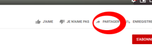
3. Puis, cliquer sur intégrer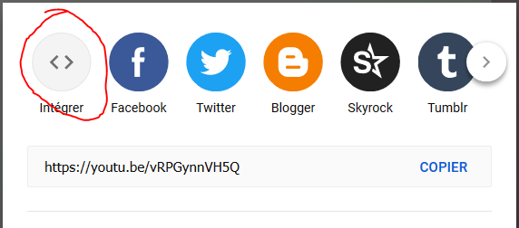
4. Copier-coller le script générer par Youtube dans votre fichier mapage.html.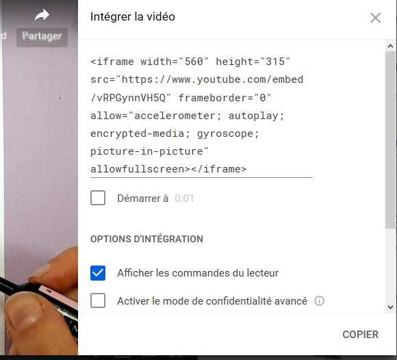
5. Sauvegarder le fichier, retourner sur votre navigateur avec le fichier mapage chargé. Pour rafraichir votre page, appuyer sur F5.A la découverte du CSS
Après ces 7 manipulations, vous avez obtenu un résultat similaire à celui présent ci-dessous :
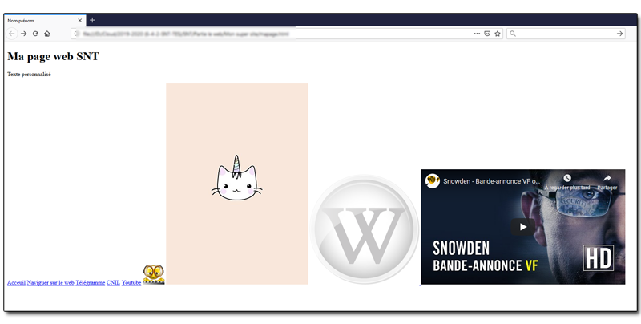
Le CSS est un langage web qui se rajoute dans un fichier HTML permettant d'éditer le webdisign d'une page web. Ses paramètres se trouvent après la balise méta : <link rel="stylesheet" href="css_eleve.css" media="screen"> Elle indique où se situe le fichier mon_css.css qui contient les paramètres graphiques de la page. Lancer dans notepad++ le fichier css_eleve.css. Nous allons modifier quelques lignes de codes.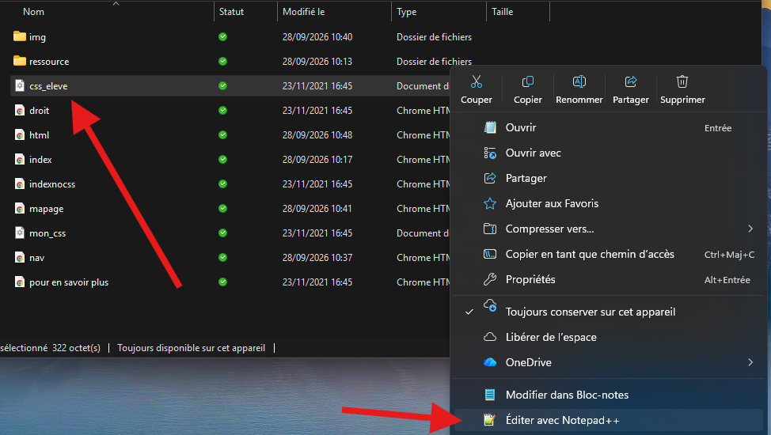
A l'ouverture vous devez obtenir ceci :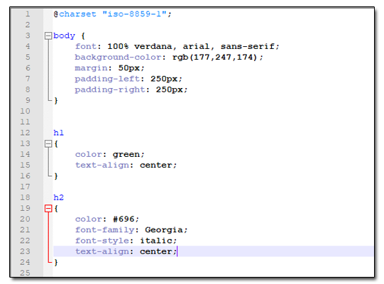
1. A la ligne 15 du fichier css, il y a un bloc consacré au style de la balise <h1>. A cette ligne, on a color: green;. Remplacer green par red. 2. Copier-coller à la fin du ficher : p { color: blue; } 3. Sauvegarder le fichier, retourner sur votre navigateur avec le fichier mapage chargé. Pour rafraichir votre page, appuyer sur F5.
La partie body du fichier css : body { font: 100% verdana, arial, sans-serif; background-color: rgb(177,247,174); margin: 50px; padding-left: 250px; padding-right: 250px; } permet de modifier le corps de la page. La ligne background-color: rgb(177,247,174); définie la couleur de l'arrière plan de la page. Afin de définir une couleur, rgb pour red, green, blue prend trois paramètres. Ces paramètres sont une série de trois nombres compris entre 0 et 255. La combinaison de ces trois nombres permet d'obtenir une couleur. Pour obtenir quelles valeurs correspond à telle couleur, vous pouvez ouvrir le logiciel Paint et cliquer sur modifier les couleurs. Selectionner votre couleur et noter la valeur du rouge, du vert et du bleu.
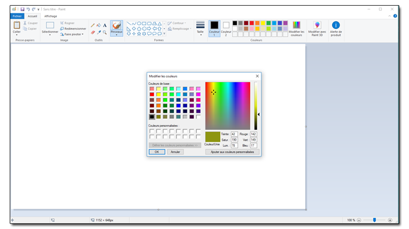
Ici la couleur orcre a pour valeur rouge : 142, vert : 149, bleu 17. En modifiant la ligne background-color: rgb(177,247,174); par background-color: rgb(142,149,17);. La couleur de l'arrière plan de la page sera orcre. 1. Choisissez une couleur dans les tons bleu et changer l'arrière plan du site par cette couleur. 2. Sauvegarder le fichier, retourner sur votre navigateur avec le fichier mapage chargé. Pour rafraichir votre page, appuyer sur F5.Pour mettre une image en arrière plan il faut remplacer background-color: rgb(177,247,174); par background-image: url("url de l'image");. 1. Modifier l'arrière plan de votre page web par l'image ayant comme adresse URL : https://wallpapercave.com/wp/YpCO1pN.jpg 2. Sauvegarder le fichier, retourner sur votre navigateur avec le fichier mapage chargé. Pour rafraichir votre page, appuyer sur F5.
Modifions le site du Likès à l'aide de l'inspecteur
1. Lire la video :
Cliquer ici si la video ne s'affiche pas. 2. Tester l'inspecteur sur le site du Likès pour le modifier.